Introduction
This documentation is last updated on 3 December 2015.
Thank you for purchasing FoodRecipe WordPress Theme . If you have any question that is beyond the scope of this documentation, Please feel free to create a support ticket using Our Support Site.
Disclaimer:
We offer limited support for theme customers. We only provide support for our themes and their core features. We cannot guarantee our themes will work properly with all third party plugins and server environments. If you plan on adding numerous plugins to this theme then please note, We cannot facilitate support for any conflicts that might arise with this theme's default functionality. The FoodRecipe WordPress theme is presented as it is.
Themeforest Item Purchase Code to Signup on Support Site
Please visit this knowledge base article to learn about how to get item purchase code from themeforest to signup on our support site.
Updating WordPress Theme
If this is a theme update and you want to apply it on your existing installation then please visit this knowledge base article to learn about a better way to update your theme
If you like this theme, Please support us by rating this theme with 5 stars (How to rate?)
{kind=link}
Install Theme
In start you must have a working version of WordPress already installed. For information in regard to installing the WordPress CMS, please see the WordPress Codex Installing WordPress
Once you have a working of version of WordPress, you need to download All Files and Documentation from themeforest and extract the downloaded zip to get various files including inspirythemes-food-recipes.zip.
{kind=link}
Install Theme Via WordPress Dashboard
- Go to 'Appearance > Themes' section
- Click 'Add New' and select the 'Upload Theme' option
- Choose the inspirythemes-food-recipes.zip file and press 'Install Now'
- Once the theme is uploaded you need to activate it.
if you face any problem during upload through dashboard, please upload the theme using FTP as guided below.
Install Theme Via FTP
- Access your hosting server using an ftp client like FileZilla
- Go to the 'wp-content/themes' folder of your WordPress installation
- Upload 'inspirythemes-food-recipes' directory from downloaded package in 'wp-content/themes/'.
- Go to 'WordPress Dashboard > Appearance > Themes' section to activate the theme
Install Plugins
After you have installed and activated the theme, there'll be a list of required and recommended plugins at the top of the WordPress dashboard.If you already hide it out, you can go to 'Appearance > Install Plugins' section instead.
So, you need to install and activate these plugins as demonstrated below.
Installing WP Post View, Display Tweets and WP Favorite Posts plugins are optional. WP Post View tracks the views of each recipe and display it at the end of rating box on single recipe page.
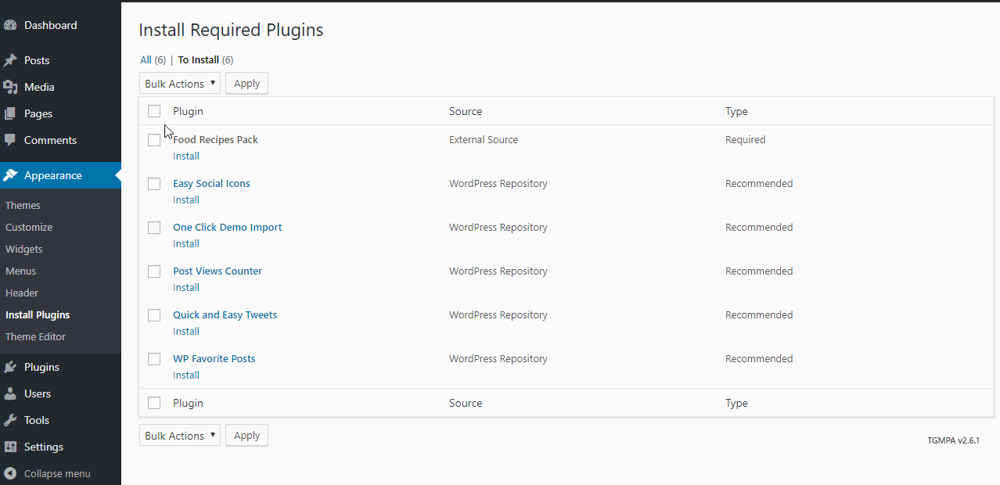Install Child Theme
If you want to make modification in this theme then it is better to modify it in child theme only. This way you can easily update your parent theme whenever new update becomes available on themeforest. You can read more about child theme from here.
To install child theme, you need to upload the inspirythemes-food-recipes-child.zip and activate it in the same way as you uploaded and activated the parent theme's Food Recipes 1.5.zip.
Import Demo Contents
You can follow one of these approaches.
- One Click Demo Import ( Automatic & Recommended )
- Import XML Contents, Customizer Settings, and Widgets Manually
One Click Demo Import ( Automatic & Recommended )
Step 1
Go to Dashboard > Settings > Permalinks and choose Post name from Common Settings and save the changes, As displayed in screen shot below.
Step 2
It is important to complete Step 1 as import script is programmed to work with pretty permalinks. Otherwise you will have configuration issues after importing demo data contents.
Go to Appearance > Import Demo Data to import demo data.
Click on blue Import Demo Data button and wait for few minutes as the demo images are being fetched from the remote server and this process can take a couple of minutes.
Once the import process is complete, You will receive a notice like the one displayed in the screen shot below.
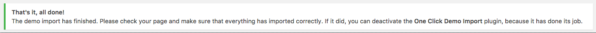Visit your site and you will find your site working like the theme demo. In case of any problem, Get in touch with our support team using our support site.
2. Import XML Contents and Configure Settings Manually
Step 1
Go to Dashboard > Settings > Permalinks and choose Post name from Common Settings and save the changes, As displayed in screen shot below.
Step 2
Go to Dashboard > Tools > Import and click Install Now shown under WordPress as displayed in image below.
Once installed, you can activate the plugin and run it by clicking on Run Importer.
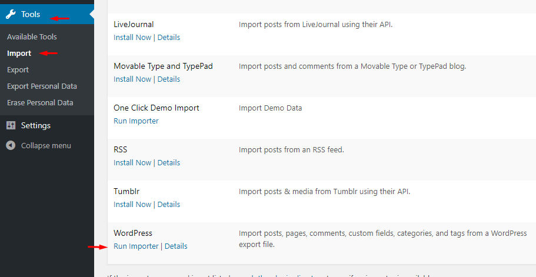Step 3
Look for Import XML folder in unzipped package downloaded from themeforest and use the XML within it.
Select the XML file from Import XML folder in unzipped package that you have downloaded from themeforest.
After importing XML file.
- Assign posts to an existing author.
- Mark the checkbox to download and import file attachments
- Click 'Submit' button
After that is done, you will have bunch of posts, pages, doctors, gallery items, services and other contents as on the theme demo.
Next step is to configure menu.
Step 4
Navigate to Appearance > Menus and use the Already Imported Menu from XML and assign it to theme location "Main Menu" from Menu Settings section below menu. After that save the menu. As pointed in screenshot below.
Create Home Page
In case of imported XML the home page is already created and you do not need to follow this section.
To set up the Home page you need to create a new page,
Go to Pages > Add New. You can give this page a title "Home" yet you do not need to include any contents for now.
Select the “Home Template” template from the Page Attributes section, as displayed in screenshot given below. Click “Publish” to make this page available for visitors.
Setting Up Main and Social Menu
The theme has two custom menu locations, one is main menu and other is social menu. You can assign each location a custom menu.
To setup your custom menus, navigate to Appearance > Menus. Give your menu a name and build it up. You can add a variety of items including pages, categories, custom links. Once you have built your menu, save it and assign it to a location.
Main Menu
Main Menu is intelligent menu. You can manage it by giving instruction and if it is getting wider than available space, it will automatically make a dropdown menu at the end for the rest of menus.
Social Menu
Social Menu is a class based menu. Enable Classes from screen options at the top right corner and give your every menu a class and add the related link for it.
Available Range of Classes are:
'facebook',
'twitter',
'rss',
'flickr',
'apple',
'bhance',
'dribbble',
'google',
'linkedin',
'pinterest',
'plus',
'sharethis',
'skype',
'stumbleupon',
'vimeo',
'wordpress',
'yahoo',
'youtube'
Create Home Page
In case of imported XML the home page is already created and you do not need to follow this section.
To set up the Home page you need to create a new page,
Go to Pages > Add New. You can give this page a title "Home" yet you do not need to include any contents for now.
Select the “Home Template” template from the Page Attributes section, as displayed in screenshot given below. Click “Publish” to make this page available for visitors.
Create Blog Page
In case of imported XML the blog page is already created and you do not need to follow this section.
To set up the Blog page you need to create a new page,
Go to Pages > Add New. You can give this page a title "Blog" yet you do not need to include any contents for now.
Select the “Default Template” template from the Page Attributes section, as displayed in screenshot given below and click “Publish”.
Configure Reading Settings
I am assuming that you have imported the XML successfully and you have home page and blog page available for use. If this is not the case then simply create a new page using Home Template and name it as Home after that create another page using default template and name it as Blog.
To configure reading settings you need to visit WordPress Admin > Settings > Reading and choose that front page displays as static page. Then select Home as Front Page and Blog as Posts Page. As, displayed in screenshot given below.
Configure Permalink Settings
To configure permalink settings visit WordPress Admin > Settings > Permalinks and configure it as displayed in image below.
Logo, Favicon and Header Image
To configure homepage from theme options you have to click Appearance > Theme Options. Here you can see first tab Named Home Page on the left column and its options on right side. First Two options are given below.
- Header Logo: Here you can upload a logo for your website. Food Recipes logo which you can see on demo site is 164px in width and 57px in height. It is batter that you put your logo near to these dimensions.
- Favicon: Here you can upload a favicon for your website in PNG format. This will appear beside you title of the website in browser's title bar.
- Header Image: Here you can upload header image for your website. Food Recipes header image which you can see on demo site has dimensions: 463 × 117. It is batter that you put your header image near to these dimensions. This image willbe override the image which you already uploaded through WordPres header tab under appearnce tab
Selecting and Setting Up Sliders
After Selecting Logo for the website and favicon, you can see an option for selecting slider type for your homepage. There are 5 types of sliders given in Food Recipes Theme. You can see setting up process for each slider in screenshots given below.
Recipe Post ID
For sliders you need recipe post id to attach slides/image with related recipe. So, this image below will guide you from where you can get Recipe ID to use it in sliders.
1) Setting Up Left Image Slider
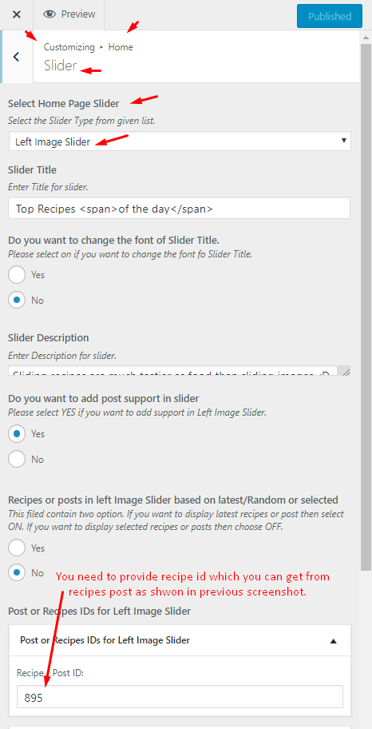2) Setting Up Basic Slider
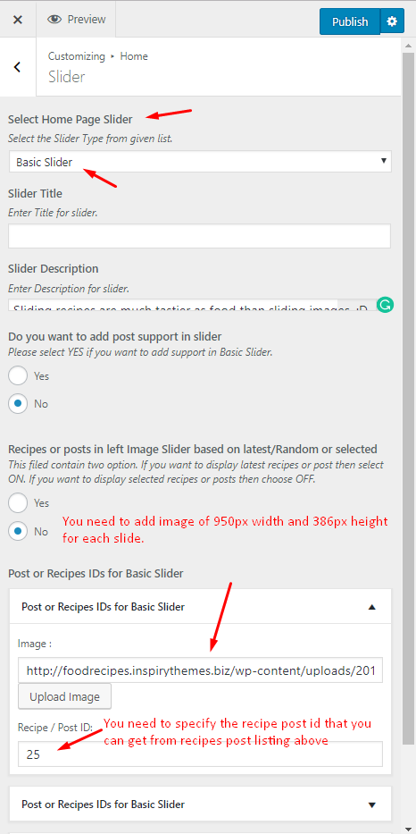3) Setting Up Nivo Slider
4) Setting Up Accordion Slider
5) Setting Up Thumbnail Slider
Homepage Widgets and Setting Up Footer
Under Sliders section you can see four fields for homepage hot recipes where you can select recipes to show in Whats Hot section. All of your recipes will be listed in these fields.
Homepage have a widgetized area at the bottom. Here you can put some widgets as you can see in Food Recipe Theme Demo.
The following image is displaying the use of widgets for homepage bottom area.
Setting Up Footer Options
Footer's two text statements can be configured from theme options as displayed in image below.
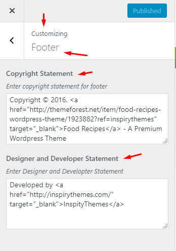Setting Up Footer Widgets
Footer three columns are widgetized areas and you can add widgets as displayed in image below.
Add News Post
Go to WordPress Admin > Posts > Add New- Provide the post title
- Enter the post contents if any and add MORE tag after few lines
-
Provide the featured image. The image should have 575px minimum width and 262px minimum height.
- Publish the post once it is ready.
Add Recipes
Go to WordPress Admin > Recipes > Add New- Provide the Recipe name
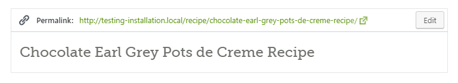
- Enter the text contents about Recipe
- Select or Add the Recipe Types
- Select or Add the Cuisines Types
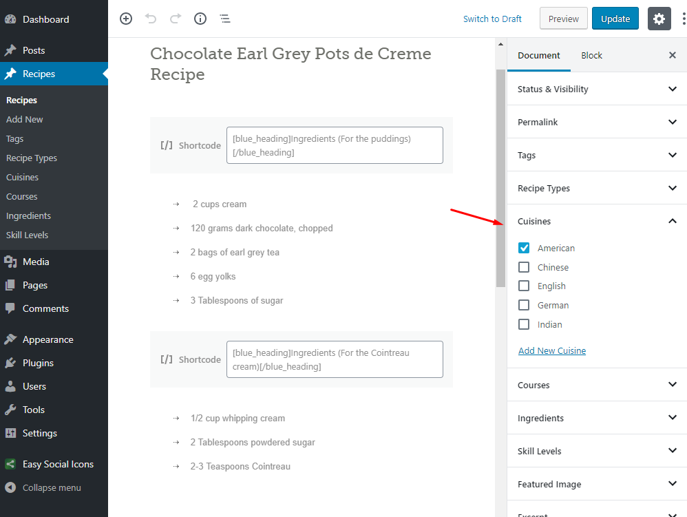
- Select or Add the Courses Types
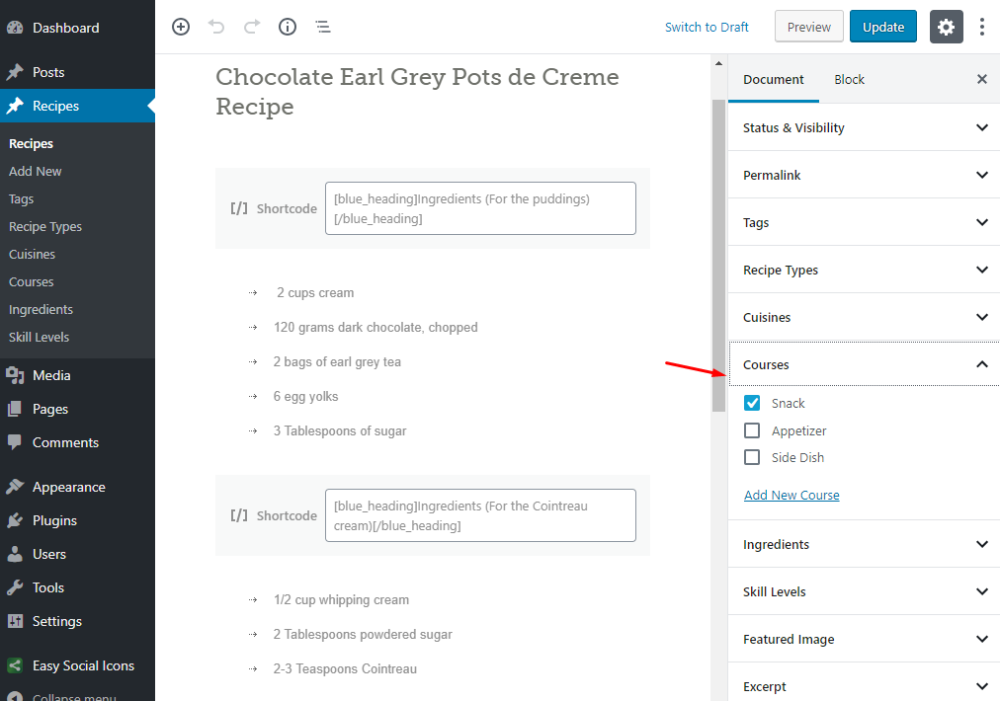
- Select or Add the Ingredients Types
- Select or Add the Skill level

- Provide the recipe related information in Recpie Information meta box

- Publish the recipe post once it is ready.
Add Recipes Listing Page
Go to WordPress Admin > Pages > Add New- Provide the page title
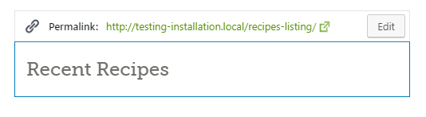
- Select the appropriate page template for Recipes Listing.
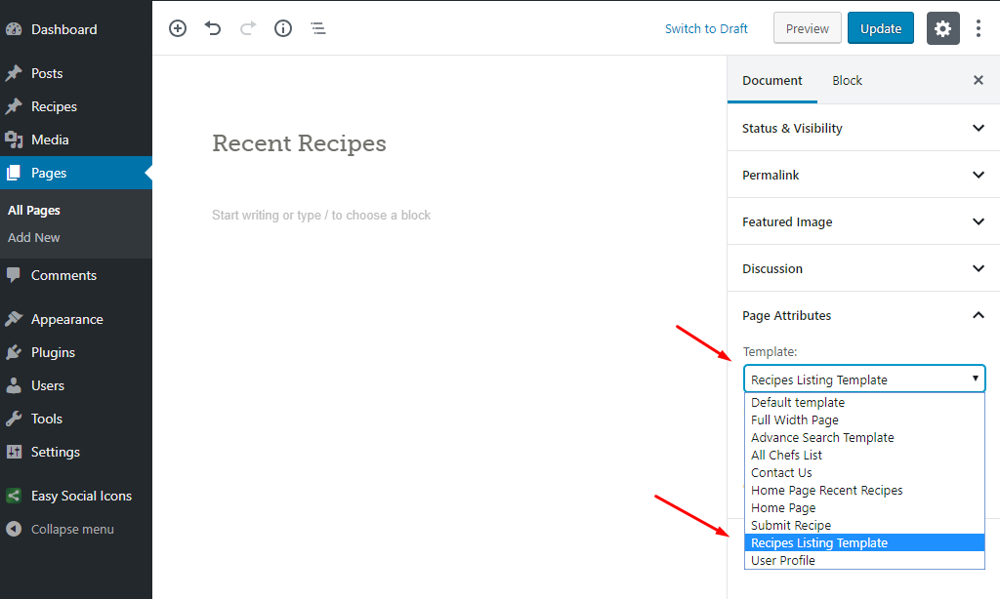
- Publish the page once it is ready.
- After publishing you need to add the newly created page in menu from WordPress Admin > Appearance > Menus
Recipe Advance Search Page
In case of imported XML the Recipe Search Results page is already created and you do not need to follow this section.
To set up the Recipe Search Results page you need to create a new page,
Go to Pages > Add New. You can give this page a title "Recipe Search Results" yet you do not need to include any contents for now.
Select the “Advance Search Result” template from the Page Attributes section, as displayed in screenshot given below and click “Publish”.
Recipe Advance Search Configuration
This Search feature will only work with pretty permalinks (Post name). So, please change your permalinks setting before moving on this section.
To configure Recipe Advance Search from theme options you have to click Appearance > Theme Options. Here you can see first tab Named Home Page on the left column and its options on right side.
If you want to use Recipe advance search then select "show" form dropdown and then select Pages Checkbox for Advance Search on which you want to show advance search module.
Copy the URL of Property Search Page and use it. As displayed in screen shot below.
Add Submit Recipe Page
Go to WordPress Admin > Pages > Add New- Provide the page title
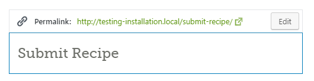
- Enter some contents if you want.
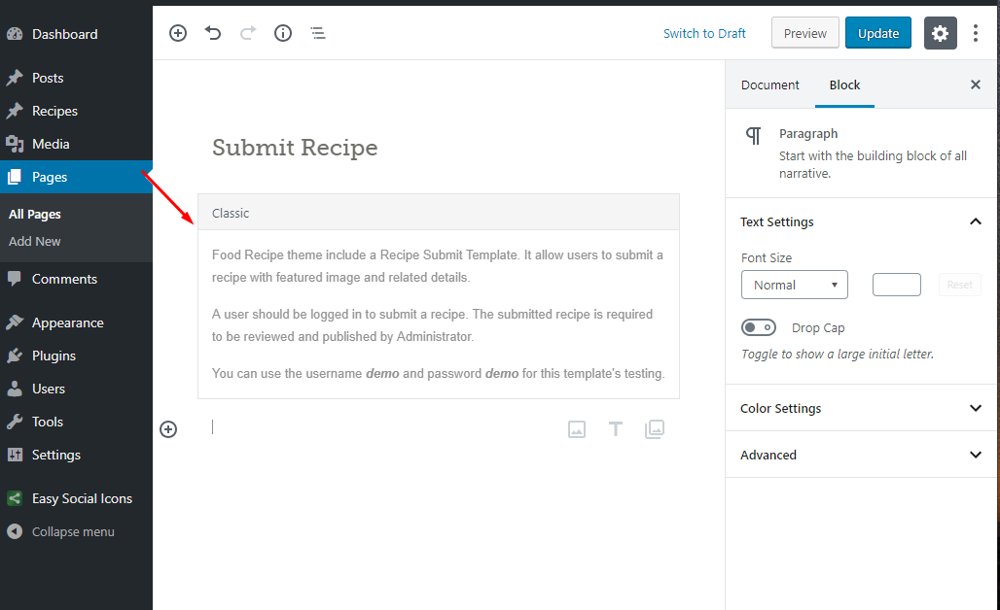
- Select the appropriate page template for Contact US.
- Publish the page once it is ready.
- After publishing you need to add the newly created page in menu from WordPress Admin > Appearance > Menus
-
Also make sure that you have allowed Membership from General Settings. So, that anyone can register and submit a recipe.
-
Provide an email address in theme optoins. You will get notification about each submitted recipe on the given email address.
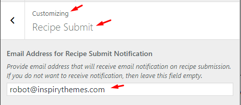
Add FAQs Page
Go to WordPress Admin > Pages > Add New- Provide the page title
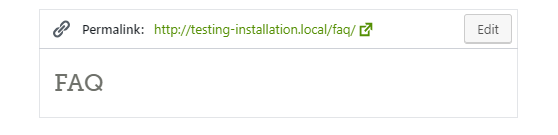
- Select the appropriate page template for FAQs page.
- Enter some text contents if you want.
- Publish the page once it is ready.
- After publishing you need to add the newly created page in menu from WordPress Admin > Appearance > Menus
User Listing Page
Go to WordPress Admin > Pages > Add New- Provide the page title
- Select the appropriate page template for User listing page.
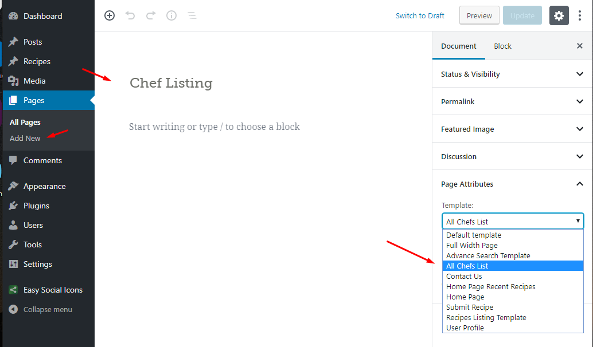
- Enter some text contents if you want.
- Publish the page once it is ready.
- After publishing you need to add the newly created page in menu from WordPress Admin > Appearance > Menus
- Here are some options to control the User Listing
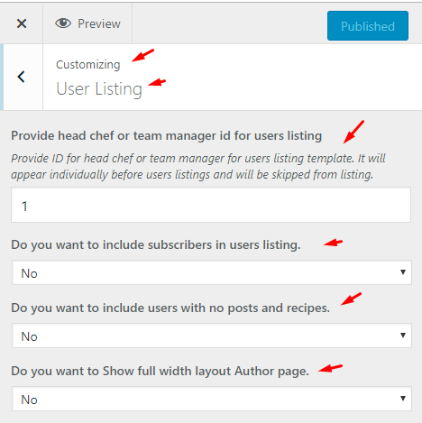
- Here you can find the ID of User.
- Here is complete user's profile page.
Add User Profile Page
This page allow the user to modify it's profile information from front end.
Go to WordPress Admin > Pages > Add New- Provide the page title
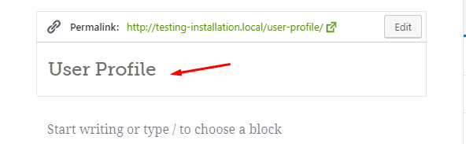
- Select the appropriate page template for Recipes Listing.
- Publish the page once it is ready.
- After publishing you need to add the newly created page in menu from WordPress Admin > Appearance > Menus
Add Contact Page
Go to WordPress Admin > Pages > Add New- Provide the page title
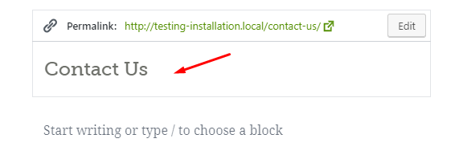
- Select the appropriate page template for Contact US.
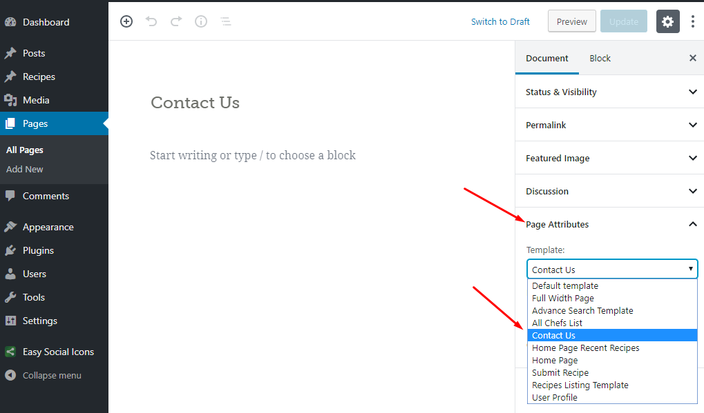
- Publish the page once it is ready.
- After publishing you need to add the newly created page in menu from WordPress Admin > Appearance > Menus
-
Configure Contact Options
Food Recipe Theme has a contact page template and few options in theme options panel to help you setup a contact page like the one you can see here.
You can find your locations Latitude and Longitude from here.
-
Configure Contact Sidebar Widget
you can add simple text widgets in contact page sidebar to display your office address information as displayed in image below.
How to set up Custom jQuery Tabs Widget
This widget is for home page widgetized area and sidebars. You can make three tabs in it and select different types of listings for your recipes.
How to set up Custom Ads Widgets
There are two Custom Ad Widgets in this theme. One is for homepage and other one is for sidebar. Both can easily be identified by their names in widgets section. These widgets have specified the size of image and have link fields for image path URL and Target URL where you want user to go.
Custom Archive Widget
This widget is to display archive links in your sidebar or footer columns area. You can display archives Daily, Weekly, Monthly or yearly bases.
Recipe Types Widget
Recipe Types widget is to list all recipe types with links to their related archive pages.
News And Events Widget
News and Events Widget have latest posts from your blog. You can use this widget in sidebar, footer columns and also in homepage bottom area.
Weekly Special Recipe Widget
Weekly Special Recipe Widget have one special recipe to show. You can use this widget in sidebar, footer columns and homepage bottom area. To select that specific recipe you have to click on "Weekly Special Recipe" Dropdown and then select weekly special recipe from the given list.
Twitter Widget
Note: Custom Twitter Widget has been removed from this version.
To display tweets you have to install 'Display Tweets' Plugin. You can specify twitter ID and number of tweets to show from settings page of this plugin. You need four other fields to make your twitter widget work with twitter API. Fields are consumer Key, consumer Secret, Access Token, Access Token Secret.
How to Get Your Twitter Consumer Keys and Access Tokens
- Sign In to the Twitter Developers section. If you do not already have an account, you can login with your normal Twitter credentials
- Got to My Applications page.
- Click Create a New ApplicationButton and it will take you to Create an Application form page.
- Provide your website name, description and URL, Agree with contract and provide CAPTCHA and press Create your Twitter Application button.
- Details of your new twitter application will be shown along with your consumer key and consumer secret.
- But, you also need to create access tokens and for that you need to click on Create my access token button.
- The page will then refresh on the "Details" tab with your new access tokens. (if you are not able to view these first time, click on details tab and access tokens should appear after page refresh) You can recreate these at any time if you need to.
- Now use these consumer key, consumer secret, access token and access token secret in twitter widget back end. As, displayed in left screenshot.
Recent Recipes Widget
Recent Recipes Widget shows latest recipes from your recipe post type. You can select number of items to show from this widget options.
Recipe Slider Widget
There are two slider widgets for sidebar. You can choose between them to slide your recipes by recipe type or by cuisine.
Footer Info Widget
Footer info widget is to put site logo in footer and company information under it. There is a readmore button like where you can guide user to your full company information page or wherever you want.
Columns
Columns shortcode is easy way to make columns in your page or post. All short codes related to columns and usage of these codes is mentioned below:
[columns] <===== You should wrap all columns in it.
[two_column][/two_column]
[one_third][/one_third]
[two_third][/two_third]
[one_fourth][/one_fourth]
[three_fourth][/three_fourth]
[/columns]
Usage
Output Example
jQuery Accordion
[accordion]
[accor_block active=true title="First Accordion Item"]Some Contents[/accor_block]
[accor_block title="Second Accordion Item"]Some Contents[/accor_block]
[accor_block title="Third Accordion Item"]Some Contents[/accor_block]
[/accordion]
Usage
Output Example
jQuery Toggle
[toggle]
[toggle_block title="Your Toggle Title"]Toggle Contents[/toggle_block]
[/toggle]
Usage
Output Example
jQuery Tabs
[tabs titles="First Tab, Second Tab, Third Tab"]
[tab_block] First Tab Contents [/tab_block]
[tab_block] Second Tab Contents [/tab_block]
[tab_block] Third Tab Contents [/tab_block]
[/tabs]
Usage
Output Example
Buttons
[button link="http://www.google.com" target="_blank"]This is simple button[/button]
Usage
Output Example
List Types
[list type="checked"]
your list item
your list item
your list item
your list item
[/list]
Available types are: "checked", "arrow", "arrow2", "arrow3"
Usage
Output Example
Message Boxes
[note]Your Note Message Her[/note]
[note type="error"]Your Note Message Her[/note]
[note type="hint"]Your Note Message Her[/note]
[note type="alert"]Your Note Message Her[/note]
[note type="note"]Your Note Message Here[/note]
Usage
Output Example
Special Headings
[red_heading]Red Heading[/red_heading]
[blue_heading]Blue Heading[/blue_heading]
[red_heading border="true"]Red Heading[/red_heading]
[blue_heading border="true"]Blue Heading with Border[/blue_heading]
Usage
Output Example
Blockquote
[blockquote width="290" align="left"]Your quote here[/blockquote]
Usage
Output Example
Custom Menus
[menu]
your menu list item
your menu list item
your menu list item
your menu list item
your menu list item
[/menu]
Usage
Output Example
Step Headings
[step_head]Step 01[/step_head]
[step_head]Step 02[/step_head]
Usage

Horizontal Line
[hline_fat]
Usage
FAQ List
[faq_wrapper]
[faq_item title="Maple and a layer of nuts in this buttery dessert makes Christmas oh so special!"]
Put Your Answer Here.!
[/faq_item]
[faq_item title="Maple and a layer of nuts in this buttery dessert makes Christmas oh so special!"]
Put Your Answer Here.!
[/faq_item]
[/faq_wrapper]
Usage
Output Example
Ingredients
[ingredients]
[ingredients title="My Heading"]
Usage
Output Example

Method
[method]
[method title="My Heading"]
Usage
Output Example
Shortcodes
1st List Style
2nd List Style
3rd List Style
Buttons
Messages
Tabs
Accordions
Toggles
How to Modify Styles
There are various options available to modify styles in this theme.- Google Fonts - Go to 'Theme Options > Styling' for different Google Fonts.
-
Chooe the font from select box. AS shown below
-
You can add multiple fonts by clicking on 'Add Google Font', as show below

-
Chooe the font from select box. AS shown below
-
Now you can select fonts, colors, font-size, font-weight etc.. for your body and heading styles. Here is a complete procedure.

- Quick CSS - Go to 'Theme Options > Styling > Quick CSS' to write some short css.
- Custom CSS in Child Theme - 'style.css' file is provided in child theme to add major css changes.
- Custom CSS in Parent Theme - if you are not using child theme then 'css/style.css' file is provided in parent theme to add major css changes.
Now save the options. Please note that if you didn't save the option then you can't get the font for body and hedaing styles.So, you have to save them before moving on.
How to Modify Theme Options
This theme uses Option Tree for theme options and related file reside in theme-options.php'
So, you can easily modify the code of existing Theme Options. Or you can add new Theme Options using option_tree_settings_args filter in child theme.

How to Modify Meta Boxes
This theme uses Meta Box Plugin for meta boxes and related file reside in 'meta-box > config-meta-boxes.php'So, you can easily modify the code of existing meta boxes. Or you can add new meta boxes using framework_theme_meta filter in child theme.
Hire Customization Services
If you need some additional features or want modification in existing theme features then you can contact theme customization service providers like http://psdtohtmlwp.com/ or https://codeable.io/ or http://werkpress.com/